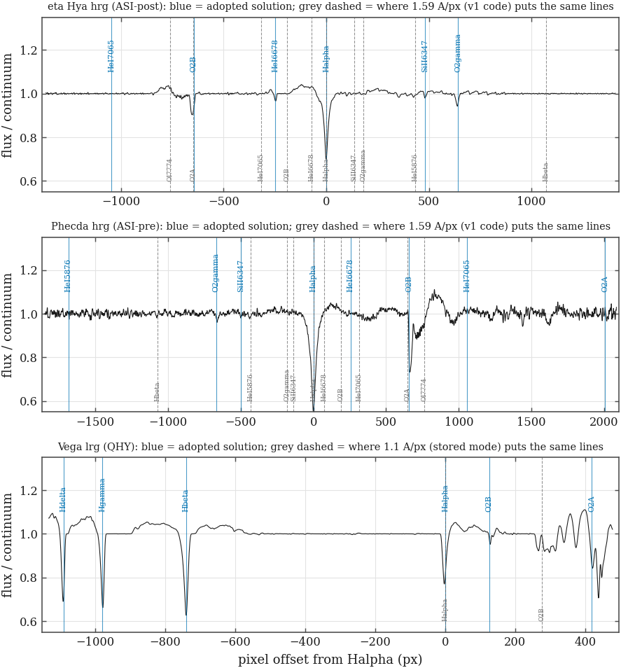

G v2.6 (2026-10-05) · built from
products/grism/grism.sqlite ·
the front page
Each calibrator frame's absorption features were identified twice with the same features and the same tolerance: once under the adopted dispersion and once under each value that was on file before 2026-10-03. On 398 hot-star hrg frames the adopted hypothesis matches a median of 4 lines against 3 for 1.59 Å/px; it matches more on 189 frames and as many on 169. On the 202 B-star frames, whose narrow He I, Si II and Ne I lines no wrong scale can reproduce, the medians are 5 against 3 (adopted better on 163 frames, rival on 5). Where 1.59 Å/px places Hβ the spectrum's median depth is 0.004 (noise 0.003; deeper than 5σ on 21 of 397 frames): Hβ is not there. The adopted hrg dispersion at the chip centre is 0.459 (ASI-post), 0.457 (ASI-pre), 0.465 (QHY) Å/px; the delivered LSF at Hα on the calibrators is 2.88 Å = 132 km/s, R 2280 (ASI-post), 2.05 Å = 94 km/s, R 3199 (ASI-pre), 2.81 Å = 129 km/s, R 2333 (QHY).

Grism epochs are the formal mechanical epochs merged across wheel-relabelling and sub-degree re-seats only: 29 of 29 formal epochs reconcile (no hardware boundary is merged).
Wavelength is a polynomial in DETECTOR position (the grism-camera distortion; one constant per frame). Stellar lines define it; for the hrg the O2γ and O2B band edges, calibrated on the adopted epochs, are added as secondary standards (two-pass solve).
| grism | epoch | status | D at centre (Å/px) | ± | |D| at −1000 / +1000 px | deg | lines | stars | frames | clipped | rms (px) | χ²/dof | O₂B edge (Å) | lines used |
|---|---|---|---|---|---|---|---|---|---|---|---|---|---|---|
| hrg | ASI-post | adopted | -0.4592 | 0.0001 | 0.506 / 0.405 | 3 | 7 | 3 | 44 | 9 | 0.828 | 425.4/108 | 6866.44 | Halpha, HeI5876, HeI6678, HeI7065, NeI6402, SiII6347, SiII6371 |
| hrg | ASI-pre | adopted | 0.4567 | 0.0003 | 0.408 / 0.506 | 2 | 5 | 4 | 23 | 13 | 0.909 | 81.1/27 | 6865.74 | Halpha, HeI6678, NeI6402, SiII6347, SiII6371 |
| hrg | QHY | adopted | -0.4652 | 0.0002 | 0.509 / 0.413 | 3 | 7 | 2 | 24 | 3 | 0.793 | 270.1/59 | 6866.07 | Halpha, HeI5876, HeI6678, HeI7065, NeI6402, SiII6347, SiII6371 |
| lrg | ANDOR-1 | adopted | -4.0993 | 0.0032 | 3.233 / 2.264 | 3 | 5 | 2 | 25 | 0 | 0.073 | 7.1/73 | 6857.42 | Halpha, Hbeta, Hdelta, Hepsilon, Hgamma |
| lrg | ASI-post | adopted | 2.2329 | 0.0027 | 2.002 / 2.494 | 3 | 5 | 6 | 71 | 20 | 0.736 | 1593.7/175 | 6869.83 | Halpha, Hbeta, Hdelta, Hepsilon, Hgamma |
| lrg | ASI-pre | adopted | -2.2290 | 0.0006 | 2.461 / 1.997 | 2 | 4 | 5 | 44 | 15 | 0.982 | 1123.3/109 | 6874.13 | Halpha, Hbeta, Hdelta, Hgamma |
| lrg | QHY | adopted | 2.3009 | 0.0014 | 1.892 / 2.195 | 3 | 4 | 8 | 91 | 35 | 0.851 | 3032.3/245 | 6855.11 | Halpha, Hbeta, Hdelta, Hgamma |
On T CrB, with the fixed solution and a per-frame Hα zero point, the O2B edge:
| grism | frames | Hα found | O₂B measured | Hα–O₂B (px) | px scatter (%) | edge − standard (Å) | scatter (Å) | scatter / lever (%) | |dev| > 2% |
|---|---|---|---|---|---|---|---|---|---|
| hrg | 85 | 83 | 83 | 637.6 | 0.51 | -2.53 | 0.85 | 0.28 | 0 |
| lrg | 124 | 115 | 110 | 129.3 | 0.61 | -5.79 | 2.03 | 0.67 | 50 |
| grism | epoch | sample | n | FWHM (px) | FWHM (Å) | 16–84% (Å) | km/s | R | off-nominal focus |
|---|---|---|---|---|---|---|---|---|---|
| hrg | ASI-post | calibrator | 113 | 6.2 | 2.88 | 2.35–3.42 | 132 | 2280 | 25 |
| hrg | ASI-pre | calibrator | 112 | 4.5 | 2.05 | 1.85–2.45 | 94 | 3199 | 15 |
| hrg | ASI-pre | tcrb | 81 | 5.1 | 2.33 | 2.01–2.75 | 107 | 2812 | 6 |
| hrg | QHY | calibrator | 65 | 6.1 | 2.81 | 2.51–3.26 | 129 | 2333 | 60 |
| lrg | ANDOR-1 | calibrator | 25 | 3.2 | 13.41 | 12.35–13.91 | 612 | 490 | 0 |
| lrg | ASI-post | calibrator | 55 | 5.7 | 13.38 | 11.94–16.97 | 611 | 490 | 10 |
| lrg | ASI-pre | calibrator | 53 | 6.0 | 14.15 | 13.03–17.19 | 646 | 464 | 9 |
| lrg | ASI-pre | tcrb | 113 | 6.1 | 14.39 | 12.14–17.15 | 657 | 456 | 1 |
| lrg | QHY | calibrator | 83 | 8.0 | 18.56 | 13.49–22.69 | 848 | 354 | 12 |
Regressors (T CrB frames; LSF in px):
| grism | regressor | slope (px/unit) | r | n | range |
|---|---|---|---|---|---|
| hrg | focus_offset | -0.00377 | -0.24 | 81 | 204.6 – 681.6 |
| hrg | ccd_temp | +0.00824 | 0.04 | 81 | -10.3 – 0.3 |
| lrg | focus_offset | +0.00745 | 0.15 | 113 | -167.0 – 120.0 |
| lrg | ccd_temp | +0.0874 | 0.29 | 113 | -10.3 – 0.3 |
| key | camera | K (e⁻/ADU) | RN (ADU) | pedestal | clip | cap applied | provisional |
|---|---|---|---|---|---|---|---|
| ASI-Mode0-bin2avg | ZWO ASI (IMX455) | 1.046 | 2.29 | 303.0 | 65,535 | 56,537 | no |
| QHY600-bin2avg | QHY600M (IMX455) | 1.288 | 3.54 | 172.0 | 65,534 | 26,300 | yes |
| QHY600-pyscope-bin2avg | QHY600M (IMX455), pyscope | 1.280 | 3.54 | 172.0 | 65,534 | 26,300 | yes |
| AC4040-HighGain | SBIG AC4040M (GSENSE4040) | 1.069 | 3.93 | 93.0 | 3,496 | 1,750 | no |
| AC4040-StackPro | SBIG AC4040M (GSENSE4040) | 1.069 | 15.59 | 1484.5 | 56,062 | 23,200 | no |
| iKon-1MHz | Andor iKon CCD | 0.940 | 7.39 | 304.8 | 64,674 | 38,900 | no |
Measured / predicted sky variance in the trace flanks, T CrB:
| grism | frames | median ratio | 16–84% | within 20% | pooled PTC K (e⁻/ADU) | floor (ADU) |
|---|---|---|---|---|---|---|
| hrg | 85 | 1.127 | 1.084–1.295 | 58/85 | 1.009 ± 0.001 | 3.57 |
| lrg | 124 | 1.143 | 1.070–1.205 | 102/124 | 0.919 ± 0.041 | 8.01 |
T CrB: 181 of 247 frames accepted; reasons {'ok': 181, 'no_tio_step': 6, 'fingerprint_mismatch': 11, 'no_trace': 38, 'no_emission_line': 11}. Of the 21 frames whose header pointing is >1° off, 8 are accepted on their pixels; the August gate rejected 21 frames on the header alone, of which 8 now pass. No frame is rejected for a header value.
| S2c verdict | accepted | rejected |
|---|---|---|
| dispersed | 181 | 66 |
False-accept rate on 160 non-T CrB frames of the same grisms, camera state and exposure regime: 0/160 (Wilson 95% 0.0–2.3%).
Empty-aperture sums ±200 px from the trace, as a fraction of the target continuum, and the share of trace columns below −3σ:
| grism | sky model | frames×2 | median (%) | scatter (%) | |frac| > 3% | neg. columns median (%) | max (%) |
|---|---|---|---|---|---|---|---|
| hrg | poly | 170 | 0.29 | 0.90 | 2 | 0.00 | 0.09 |
| hrg | flanking | 170 | 0.88 | 0.66 | 5 | 0.00 | 0.22 |
| lrg | poly | 248 | 0.20 | 1.39 | 26 | 0.15 | 6.41 |
| lrg | flanking | 248 | 1.05 | 1.23 | 58 | 0.29 | 17.02 |
| grism | frames | sky-method diff. median (%) | 84th pct (%) | boxcar vs optimal median (%) | 84th pct (%) |
|---|---|---|---|---|---|
| hrg | 85 | 1.70 | 3.31 | 0.99 | 1.58 |
| lrg | 124 | 1.49 | 3.76 | 1.08 | 2.65 |
| grism | frames | clean | flag | discard | cap (ADU) | brightest good pixel | bad-pixel fraction of aperture (%) |
|---|---|---|---|---|---|---|---|
| hrg | 85 | 85 | 0 | 0 | 56,537.49 | 16,850 | 0.53 |
| lrg | 124 | 124 | 0 | 0 | 56,537.49 | 17,307 | 0.50 |
| grism | paired frames | v1 EW (Å) | v2 EW (Å) | v2/v1 | 16–84% | v1 scatter (%) | v2 scatter (%) | v1 error (Å) | v2 error (Å) | v1 dispersions (Å/px) |
|---|---|---|---|---|---|---|---|---|---|---|
| hrg | 26 | 27.5 | 22.2 | 1.03 | 0.42–1.10 | 49 | 18 | 0.72 | 0.37 | 0.45–1.80 |
| lrg | 32 | 15.2 | 21.5 | 1.21 | 0.31–2.30 | 96 | 18 | 1.21 | 0.79 | 0.28–2.00 |